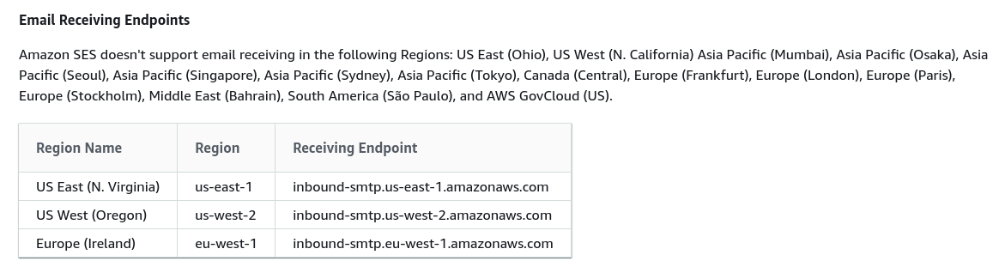

Amazon AWS: hidden limitations
Amazon Simple Email Service (“SES”) promises to be able to also receive email.
I use eu-central-1 (Frankfurt) region for my webservices.
I was frustrated not being able to find receive-related settings.
It was only after I came across some documentation I that realized the issue might be that not all regions support receiving:

=> Frankfurt region doesn’t support receiving email.
And sure enough, verifying this from UI, the menu item simply disappears when you’re in the wrong region:
(NOTE: the “Unavailable” operation is only due to me changing the region from “Email receiving” page - the warning wasn’t visible to me before I wasn’t even aware the page can be in the menu)
How hard would it have been to have the “Email receiving” link in menu with passive color with “?” icon next to it with a tooltip explaining that this feature isn’t available in this region?
Amazon must really hate its users since they don’t seem to care about UX at all (see other posts tagged #Amazon).

Thanks for reading! 😍
If you like my writing, consider following me on Twitter.
Stay updated on my blog posts & projects - sign up for
my newsletter. 🚀
No spam, unsubscribe any time.
RSS also available.